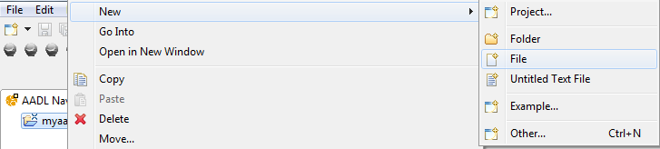
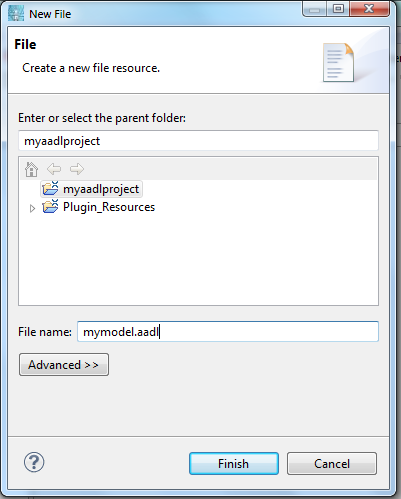
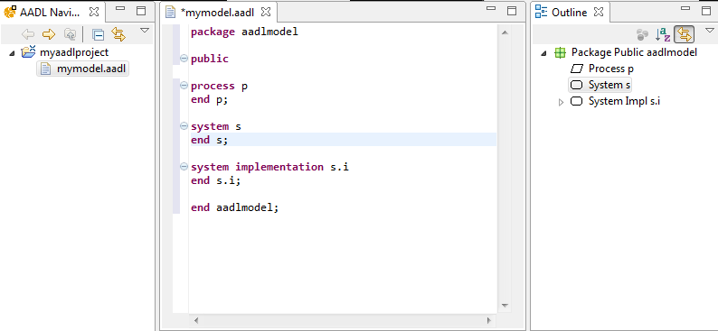

We assume you created an AADL project, as described in the previous section. Then, for adding a model, right click on the project directory (in the Resource or AADL Navigator perspectives) and select New and then File, as shown in the following picture.
Then, enter the file of your project, as shown in the following picture. Please note that the file name must ends with the suffix .aadl. For example, choose the name mymodel.aadl, as in the following picture.
You can then write your AADL model using the syntax editor, as shown in the following picture. The tool provides three views:
Once your are done and you wrote your AADL model, you may want to use validation tools to check its correctness or analyze your system. Most of the tools work on the instance model and requires you instantiate your system before proceeding. The next section explains how to proceed.
